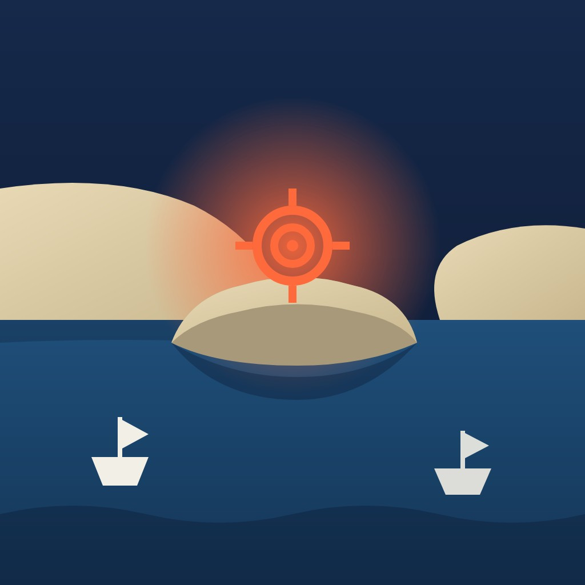

World

US strikes on Qeshm Island test a fragile pause in the Iran war
US forces struck an Iranian missile launcher on Qeshm Island in the Strait of Hormuz after Iran fired at an American aircraft, US officials said, hours before Americans began voting in midterm elections.
Abstract
The war between the United States and Iran began on 28 February 2026 with joint US and Israeli strikes[1]. On the night of 2 November 2026, on the eve of the US midterm elections, US forces carried out what officials called limited, defensive strikes on Iran's Qeshm Island, in response to the Islamic Revolutionary Guard Corps firing at an American aircraft[1,2,3,4,5]. Officials said the strikes did not signal a resumption of major combat operations[3]. Iran's parliament speaker warned that any US strategic error would open "a new battlefield in the war"[6]. By 16 September the International Maritime Organization had verified 80 attacks on merchant vessels in and around the strait and at least 22 seafarer deaths[7]. Total oil flows through the strait rose to 10.9 million barrels a day in September[8]. A Central Command estimate puts the cost of the war at $47.1 billion, and 64% of US adults polled in July said it had not been worth fighting[9,10]. Mr Trump has signalled both that Iran wants a settlement and that further strikes are possible, while Iran says a plan it submitted in September could be carried out in two days[1,11,12]. Uncertainty remains because Central Command had not commented and accounts of the aircraft involved conflict[3,4].
Key points
- US officials said the limited, defensive strikes on Qeshm responded to fire at a US aircraft and did not signal a resumption of major combat operations[1,3].
- The IMO had verified 80 attacks on merchant vessels and at least 22 seafarer deaths in and around the strait by 16 September[7].
- Al-Monitor, citing the Washington Institute for Near East Policy, reported a record 28 confirmed or reported attacks in and around the strait in October, and 113 since 28 February[13].
- Total oil flows through the strait rose to 10.9 million barrels a day in September, while Brent crude futures rose 13% since early September to around $107[8].
- A Central Command estimate put the cost of the war at $47.1 billion, excluding repairs to US bases damaged by Iranian attacks[9].
- An AP-NORC poll in July found that 64% of US adults thought the war had not been worth fighting, against 33% who thought it had[10].
References
- U.S. launches strikes on Iranian targets in Strait of Hormuz. CBS News; Nov 2026. News report✓ Link checkedArchived copySupports the account from three US officials, the IRGC firing at a US aircraft, Qeshm's role in monitoring shipping, the 28 February start of the war and Iranian retaliation, and Trump's Fox News remarks on Pickaxe Mountain. ↩
- U.S. military carries out limited strikes on Iran's Qeshm Island, U.S. officials say. NBC News; Nov 2026. News report✓ Link checkedSupports the two-official account, the quoted official description of the strike as defensive, the routine IRGC targeting of US aircraft, the timing before the midterms and Vance's quote. ↩
- US carries out defensive airstrikes on Iran's Qeshm Island: Officials. ABC News; 2 Nov 2026. News report✓ Link checkedArchived copySupports the two-official account, the statement that the strikes did not signal a resumption of major combat, Iran's RQ-170 claim and the US denial, and Central Command's lack of comment. ↩
- US carries out attack on Iran's Qeshm Island. The National; 3 Nov 2026. News report✓ Link checkedArchived copySupports the timing on Monday night, the downing of an MQ-9 and destruction of the launcher by a US jet, and its summary of Wall Street Journal reporting that limited strikes were kept secret. ↩
- US strikes Iran's Qeshm Island ahead of midterm elections. Euronews; 3 Nov 2026. News report✓ Link checkedArchived copySupports the timing before the midterms in which Republicans seek to keep Congress, the strait's normal share of about one-fifth of global oil supplies, and Trump's Truth Social post. ↩
- Iran warns of 'new battlefield' after reported US strike on Qeshm. Euronews; 3 Nov 2026. News report✓ Link checkedArchived copySupports the US jet strike on an IRGC missile launch system, Ghalibaf's quotes and readiness claims, the possible European targets, the Hamshahri report and the reference to the late Ali Khamenei. ↩
- Stop attacking merchant ships and seafarers: IMO Secretary-General to Member States. International Maritime Organization; 16 Sept 2026. Official statement✓ Link checkedArchived copySupports the 80 verified attacks, at least 22 seafarer deaths and Dominguez's quote that more than one country is attacking ships. ↩
- Oil Market Report - October 2026. International Energy Agency; 14 Oct 2026. Official report✓ Link checkedArchived copySupports the September figures for Hormuz flows, bypass exports and Gulf crude exports, the warning about renewed attacks, and the rise in Brent to around $107. ↩
- Iran war has cost Pentagon more than $47B: What to know. Al-Monitor; 28 Oct 2026. News report✓ Link checkedArchived copySupports the $47.1 billion Central Command estimate, its breakdown, and the exclusion of base repair costs according to Jay Hurst. ↩
- Most say the war with Iran is not worth fighting. AP-NORC; 30 Jul 2026. Primary data✓ Link checkedArchived copySupports the July poll results, field dates, sample size, margin of error and partisan split. ↩
- US hits Qeshm Island, Pezeshkian signals more diplomacy: Iran war latest. Al Jazeera; 3 Nov 2026. News report✓ Link checkedArchived copySupports the IRNA-reported MQ-9 claim, the description of the strike as the first on Qeshm since June, the 7 March attack's effect on 30 villages, Mojtaba Khamenei as Supreme Leader, and the statements by Pezeshkian and Baghaei. ↩
- Trump says deal with Iran still possible as Americans set to vote. CBS News; 3 Nov 2026. News report✓ Link checkedArchived copySupports Gharibabadi's quote, Trump's statements of 2 November, the details of Iran's two-day plan and its demands, Al Ansari's quote, UKMTO's count of 30 attacks in October, and the death of the Indian seafarer. ↩
- Ship attacks in Strait of Hormuz hit record high in October. Al-Monitor; 23 Oct 2026. News report✓ Link checkedArchived copySupports the 28 attacks in October, 113 since 28 February, and UKMTO's statement on insufficient voluntary reporting. ↩
Limited strikes on an island that overlooks the strait
The United States military carried out what officials described as limited, defensive strikes on Iran's Qeshm Island, in the Strait of Hormuz, on the night of Monday 2 November 2026, according to US officials who spoke to news organisations on condition of anonymity[1,2,3,4]. The officials said the strikes were a response to Iran's Islamic Revolutionary Guard Corps (IRGC) firing at an American aircraft[1,3]. The strikes came on the eve of the US midterm elections, in which Republicans are trying to keep control of Congress[2,5].
Qeshm lies in the northern part of the strait, off the Iranian coast, and CBS News describes it as an Iranian monitoring and control point for commercial shipping[1]. The National reported that an Iranian surface-to-air missile had downed a US MQ-9 Reaper drone over waters east of the strait, and that a US fighter jet then destroyed the missile launcher in what officials called self-defence[4].
US officials took care to present the operation as contained. ABC News, citing officials, reported that the airstrikes "do not signal the resumption of major combat operations against Iran, but were the latest limited strike carried out by U.S. forces in recent weeks"[3].
Disputed drone claims and the response from Tehran
The two governments do not agree on what came before the strikes. ABC News reported that Iran had claimed earlier that day to have shot down two RQ-170 reconnaissance drones, which a US official said was false[3]. Al Jazeera, citing IRNA, reported that the IRGC had destroyed a US MQ-9 drone east of the strait[6].
Tehran's public response mixed defiance with signals that it wanted to keep talking. Deputy Foreign Minister Kazem Gharibabadi said on 3 November that "The Islamic Republic of Iran retains the right to legitimate self-defense until the military aggression has been completely and permanently brought to an end"[7]. Parliament Speaker Mohammad Bagher Ghalibaf warned that any US strategic error would open "a new battlefield in the war" and said that senior commanders had decided on "a response without geographical limits"[8].
Both governments therefore call their own fire self-defence, which is the language of Article 51 of the UN Charter. That article preserves "the inherent right of individual or collective self-defence if an armed attack occurs against a Member of the United Nations" and requires states acting in self-defence to report their measures immediately to the Security Council[9].
Eight months of war, truce and renewed fighting
The war began on 28 February 2026 with joint US and Israeli strikes on Iranian territory, and Iran retaliated by targeting commercial shipping and allied interests across the Gulf[1]. A two-week ceasefire mediated by Pakistan began in April, but talks in Islamabad ended without agreement and President Donald Trump then threatened a "full naval blockade" of Iran[10].
The truce collapsed on 8 July after attacks by both sides, and Mr Trump declared it "over"[10]. Speaking on 2 November, Mr Trump said: "I don't know if you even call it a war because we haven't been doing any fighting for months"[7].
Al Jazeera described the strikes of 2 November as the first attack on Qeshm since June, although Iranian officials reported projectiles hitting the island in July[6,11].
Shipping attacks, oil flows and the cost of the war
In normal times the strait carries about a fifth of the world's oil supplies, and traffic through it has been heavily disrupted since late February[5]. Iran International reported that only two vessels passed through on 14 August, compared with more than 130 ships a day before February[12]. On 14 October the International Energy Agency (IEA) reported that total oil flows through the strait had risen by 3.7 million barrels a day to 10.9 million barrels a day in September[13]. The agency warned that renewed attacks on energy infrastructure and tankers threatened to reverse these gains, and noted that Brent crude futures had risen 13% since early September to around $107 a barrel[13].
By 16 September the International Maritime Organization (IMO) had verified 80 attacks on merchant vessels in and around the strait and at least 22 seafarer deaths[14]. On 23 October Al-Monitor reported 28 confirmed or reported attacks during October, a record, and quoted UKMTO, a British maritime security service, as saying it was "struggling to capture the whole picture due to insufficient voluntary reporting by shippers"[15].
Al-Monitor reported on 28 October that an unclassified Central Command estimate provided to Congress put the cost of the war at $47.1 billion, which does not include the cost of repairing US bases damaged by Iranian attacks[16].
Political pressure, mixed signals and open questions
An AP-NORC poll of 1,165 US adults, carried out from 23 to 27 July, found that 64% thought the war had not been worth fighting and 33% thought it had[17].
Signals from Washington before the vote pointed in two directions. On 2 November Mr Trump wrote on Truth Social that "Iran wants a settlement, as soon as possible. It could happen!"[6,7]. On 28 October The Express Tribune, citing The Wall Street Journal, reported that Washington had told several Gulf states to prepare for a possible military campaign after the elections, and that Mr Trump had not decided[18].
Foreign ministry spokesman Esmaeil Baghaei said that a plan Iran submitted in September could be shortened and carried out in "two days", including reopening the strait[6]. Qatar's foreign ministry spokesman, Majed Al Ansari, said on 3 November that "Both parties remain committed to the negotiation process"[7]. Ashkan Hashemipour, a doctoral candidate at the University of Oxford, argued in Foreign Policy that Iran is talking peace while rebuilding its capacity to wage war[19].
Central Command had not commented, so the target and the weapons used are known only from anonymous officials and Iranian media[3,20]. Accounts of the aircraft involved conflict, and reports of US plans for a post-election campaign rely on anonymous sources[3,4,18]. The available evidence does not show whether the Qeshm exchange will be the last of the limited strikes or the start of a larger campaign.
References
- U.S. launches strikes on Iranian targets in Strait of Hormuz. CBS News; Nov 2026. News report✓ Link checkedArchived copySupports the account from three US officials, the IRGC firing at a US aircraft, Qeshm's role in monitoring shipping, the 28 February start of the war and Iranian retaliation, and Trump's Fox News remarks on Pickaxe Mountain. ↩
- U.S. military carries out limited strikes on Iran's Qeshm Island, U.S. officials say. NBC News; Nov 2026. News report✓ Link checkedSupports the two-official account, the quoted official description of the strike as defensive, the routine IRGC targeting of US aircraft, the timing before the midterms and Vance's quote. ↩
- US carries out defensive airstrikes on Iran's Qeshm Island: Officials. ABC News; 2 Nov 2026. News report✓ Link checkedArchived copySupports the two-official account, the statement that the strikes did not signal a resumption of major combat, Iran's RQ-170 claim and the US denial, and Central Command's lack of comment. ↩
- US carries out attack on Iran's Qeshm Island. The National; 3 Nov 2026. News report✓ Link checkedArchived copySupports the timing on Monday night, the downing of an MQ-9 and destruction of the launcher by a US jet, and its summary of Wall Street Journal reporting that limited strikes were kept secret. ↩
- US strikes Iran's Qeshm Island ahead of midterm elections. Euronews; 3 Nov 2026. News report✓ Link checkedArchived copySupports the timing before the midterms in which Republicans seek to keep Congress, the strait's normal share of about one-fifth of global oil supplies, and Trump's Truth Social post. ↩
- US hits Qeshm Island, Pezeshkian signals more diplomacy: Iran war latest. Al Jazeera; 3 Nov 2026. News report✓ Link checkedArchived copySupports the IRNA-reported MQ-9 claim, the description of the strike as the first on Qeshm since June, the 7 March attack's effect on 30 villages, Mojtaba Khamenei as Supreme Leader, and the statements by Pezeshkian and Baghaei. ↩
- Trump says deal with Iran still possible as Americans set to vote. CBS News; 3 Nov 2026. News report✓ Link checkedArchived copySupports Gharibabadi's quote, Trump's statements of 2 November, the details of Iran's two-day plan and its demands, Al Ansari's quote, UKMTO's count of 30 attacks in October, and the death of the Indian seafarer. ↩
- Iran warns of 'new battlefield' after reported US strike on Qeshm. Euronews; 3 Nov 2026. News report✓ Link checkedArchived copySupports the US jet strike on an IRGC missile launch system, Ghalibaf's quotes and readiness claims, the possible European targets, the Hamshahri report and the reference to the late Ali Khamenei. ↩
- United Nations Charter, Chapter VII: Action with Respect to Threats to the Peace, Breaches of the Peace, and Acts of Aggression. United Nations; 26 Jun 1945. Court or legal document✓ Link checkedArchived copySupports the quoted text of Article 51 and its requirement to report self-defence measures to the Security Council. ↩
- 2026 Iran war ceasefire. Wikipedia. Reference work✓ Link checkedArchived copySupports the chronology of the Pakistan-mediated April ceasefire, the Islamabad talks, the naval blockade, the 17 June memorandum and the collapse of the truce on 8 July. ↩
- Projectiles hit Iran's Gulf island of Qeshm: state media. The Defense Post; 13 Jul 2026. News report✓ Link checkedArchived copySupports the Qeshm governor's statement on 10 to 11 projectiles, all military targets and no casualties, in July. ↩
- US rules out Iran truce extension as Tehran official sets new deadline. Iran International; 17 Aug 2026. News report✓ Link checkedArchived copySupports the expiry of the 60-day interim agreement on 17 August, Trump's quote on nuclear weapons, and the two vessels that transited on 14 August compared with more than 130 a day before the war. ↩
- Oil Market Report - October 2026. International Energy Agency; 14 Oct 2026. Official report✓ Link checkedArchived copySupports the September figures for Hormuz flows, bypass exports and Gulf crude exports, the warning about renewed attacks, and the rise in Brent to around $107. ↩
- Stop attacking merchant ships and seafarers: IMO Secretary-General to Member States. International Maritime Organization; 16 Sept 2026. Official statement✓ Link checkedArchived copySupports the 80 verified attacks, at least 22 seafarer deaths and Dominguez's quote that more than one country is attacking ships. ↩
- Ship attacks in Strait of Hormuz hit record high in October. Al-Monitor; 23 Oct 2026. News report✓ Link checkedArchived copySupports the 28 attacks in October, 113 since 28 February, and UKMTO's statement on insufficient voluntary reporting. ↩
- Iran war has cost Pentagon more than $47B: What to know. Al-Monitor; 28 Oct 2026. News report✓ Link checkedArchived copySupports the $47.1 billion Central Command estimate, its breakdown, and the exclusion of base repair costs according to Jay Hurst. ↩
- Most say the war with Iran is not worth fighting. AP-NORC; 30 Jul 2026. Primary data✓ Link checkedArchived copySupports the July poll results, field dates, sample size, margin of error and partisan split. ↩
- US warns Gulf states of possible 'short, intense' Iran war after midterms: report. The Express Tribune; 28 Oct 2026. News report✓ Link checkedArchived copySupports the Wall Street Journal report on US warnings to Gulf states, Trump's undecided position and the White House statement. ↩
- Iran Is Talking Peace but Preparing for War. Foreign Policy; 3 Nov 2026. Analysis or opinion✓ Link checkedArchived copySupports Hashemipour's argument that Iran is negotiating while rebuilding its military capacity, and Akhlaghi's appointment and quoted threat. ↩
- US strikes Iran's Qeshm Island as Trump signals progress in talks. France 24; 3 Nov 2026. News reportSite blocks checksSupports IRNA's report of five explosions and two aircraft seen, and the Pentagon's referral of questions to Central Command, which did not respond to AFP. ↩
Abstract
The war between the United States and Iran began on 28 February 2026 with joint US and Israeli strikes[1]. On the night of 2 November 2026, on the eve of the US midterm elections, US forces carried out what officials called limited, defensive strikes on Iran's Qeshm Island, in response to the Islamic Revolutionary Guard Corps firing at an American aircraft[1,2,3,4,5]. Officials said the strikes did not signal a resumption of major combat operations[3]. Iran's parliament speaker warned that any US strategic error would open "a new battlefield in the war"[6]. By 16 September the International Maritime Organization had verified 80 attacks on merchant vessels in and around the strait and at least 22 seafarer deaths[7]. Total oil flows through the strait rose to 10.9 million barrels a day in September[8]. A Central Command estimate puts the cost of the war at $47.1 billion, and 64% of US adults polled in July said it had not been worth fighting[9,10]. Mr Trump has signalled both that Iran wants a settlement and that further strikes are possible, while Iran says a plan it submitted in September could be carried out in two days[1,11,12]. Uncertainty remains because Central Command had not commented and accounts of the aircraft involved conflict[3,4].
1Limited strikes on an island that overlooks the strait
The United States military carried out what officials described as limited, defensive strikes on Iran's Qeshm Island, in the Strait of Hormuz, on the night of Monday 2 November 2026, according to US officials who spoke to news organisations on condition of anonymity[1,2,3,4]. CBS News and NBC News each attributed their accounts to three US officials, while ABC News cited two[1,2,3]. The officials said the strikes were a response to Iran's Islamic Revolutionary Guard Corps (IRGC) firing at an American aircraft[1,3]. "This was a defensive measure for Iranians using surface-to-air missiles against U.S. assets," one official told NBC News[2]. The strikes came on the eve of the US midterm elections, in which Republicans are trying to keep control of Congress[2,5].
Qeshm lies in the northern part of the strait, off the Iranian coast, and CBS News describes it as an Iranian monitoring and control point for commercial shipping through the waterway[1]. The National reported that an Iranian surface-to-air missile had downed a US MQ-9 Reaper drone over waters east of the strait, and that a US fighter jet then destroyed the missile launcher in what officials called self-defence[4]. Euronews reported that a US Air Force jet struck an IRGC surface-to-air missile launch system on the island after a missile was allegedly fired at a US aircraft[6]. According to France 24, Iran's state news agency IRNA reported that "five explosions in rapid succession were heard on the island", and residents said they had seen two aircraft overhead[13].
US officials took care to present the operation as contained. ABC News, citing officials, reported that the airstrikes "do not signal the resumption of major combat operations against Iran, but were the latest limited strike carried out by U.S. forces in recent weeks"[3]. One official told NBC News that the IRGC had "routinely targeted and shot at U.S. manned and unmanned aircraft over the Strait of Hormuz" in recent weeks, and that US forces "occasionally" struck Iranian missile launchers in response[2]. The National, summarising reporting by The Wall Street Journal, said that such strikes had been "purposefully kept secret so as not to indicate any intent of resuming its major military campaign"[4]. The Pentagon referred questions to US Central Command, which did not respond to requests for comment from AFP or ABC News[3,13].
2Disputed drone claims and the response from Tehran
The two governments do not agree on what came before the strikes. ABC News reported that Iran had claimed earlier that day to have shot down two RQ-170 reconnaissance drones, which a US official said was false[3]. The Iranian news agency Mehr carried an IRGC statement saying that its Aerospace Force had brought down two US MQM-170 reconnaissance drones south of Qeshm Island using electronic warfare systems[14]. Al Jazeera, citing IRNA, reported that the IRGC had destroyed a US MQ-9 drone east of the strait[11]. The claims about the reconnaissance drones rest on IRGC statements alone, and even the name of the aircraft differs between reports.
Tehran's public response mixed defiance with signals that it wanted to keep talking. Deputy Foreign Minister Kazem Gharibabadi said on 3 November that "The Islamic Republic of Iran retains the right to legitimate self-defense until the military aggression has been completely and permanently brought to an end"[12]. Parliament Speaker Mohammad Bagher Ghalibaf warned that any US strategic error would open "a new battlefield in the war" and said that "The ball is in America's court to prevent war"[6]. He said Iran had reached its highest level of defensive readiness and that senior commanders had decided on "a response without geographical limits", which Euronews reported could include US support bases in Britain, Italy, Portugal and Germany[6]. Euronews also cited the newspaper Hamshahri as reporting that Iran had updated its list of targets to include US military infrastructure in Europe[6].
Both governments therefore call their own fire self-defence, which is the language of Article 51 of the UN Charter. Article 51 preserves "the inherent right of individual or collective self-defence if an armed attack occurs against a Member of the United Nations, until the Security Council has taken measures necessary to maintain international peace and security"[15]. The same article requires states acting in self-defence to report their measures immediately to the Security Council[15]. Neighbouring states have borne much of the war's cost: the US Congressional Research Service counted more than 6,700 Iranian drones and missiles launched against the territory of Gulf Cooperation Council states between 28 February and 17 May, nearly half of them aimed at the United Arab Emirates[16]. On 26 October in Cairo, the UN Secretary-General, António Guterres, warned that "If the sabre-rattling we are witnessing now translates itself into a major escalation, the situation in the region can get out of control"[17].
3Eight months of war, truce and renewed fighting
The war began on 28 February 2026 with joint US and Israeli strikes on Iranian territory, and Iran retaliated by targeting commercial shipping and allied interests across the Gulf[1]. Ayatollah Ali Khamenei, Iran's Supreme Leader, was killed in the opening strikes, and Ayatollah Mojtaba Khamenei now holds the post[6,11,18]. A two-week ceasefire mediated by Pakistan began on 7 to 8 April[19]. Talks in Islamabad on 11 and 12 April, attended by Vice President JD Vance and Iranian Foreign Minister Abbas Araghchi, ended without agreement, and President Donald Trump then threatened a "full naval blockade" of Iran[19]. On 17 June the two countries' presidents signed a memorandum that set a 60-day period to "negotiate the final terms of a deal" and, according to the US Energy Information Administration (EIA), aimed among other things to resume traffic through the strait[19,20].
The truce collapsed on 8 July after attacks by both sides, and Mr Trump declared it "over"[19]. UN News reported that the United States struck around 140 targets after Iran attacked a vessel in the strait, and that Iran then launched missiles and drones at a US base in Jordan and at the UAE, Bahrain, Oman and Kuwait[21]. Iran International reported that the 60-day interim agreement expired on 17 August without being extended, and quoted Mr Trump as saying: "Iran cannot have a nuclear weapon"[22]. Speaking on 2 November, Mr Trump said: "I don't know if you even call it a war because we haven't been doing any fighting for months"[12].
Qeshm has been hit before. Al Jazeera reported that an attack on 7 March cut off freshwater supplies to 30 surrounding villages[11]. On 13 July Hossein Amir Teymouri, governor of Qeshm township, told IRNA that "Between 10 to 11 enemy projectiles have struck Qeshm Island since Sunday afternoon", adding that all of the targets were military and that no one had been killed or injured[23]. On 16 September, according to Reuters, IRNA reported several explosions on the island, saying that "the sounds appeared to have come from the direction of the sea"[24]. Al Jazeera nonetheless described the strikes of 2 November as the first attack on Qeshm since June[11].
4Shipping attacks and a partial recovery in oil flows
In normal times the strait carries about a fifth of the world's oil supplies, and traffic through it has been heavily disrupted since late February[5]. Iran International reported that only two vessels passed through on 14 August, compared with more than 130 ships a day before February[22]. In May Iran set up a Persian Gulf Strait Authority to collect transit tolls and arrange passage with the IRGC Navy, and the United States threatened to sanction any entity that paid Iran for transit[25]. The Maritime Executive argued that the new body "does not resolve the questionable legality of Iran's tolls on an internationally-designated strait"[25].
Traffic later recovered in part. On 14 October the International Energy Agency (IEA) reported that ship-to-ship transfers in the Gulf of Oman had helped lift total oil flows through the strait by 3.7 million barrels a day to 10.9 million barrels a day in September[8]. Exports through routes that bypass the strait rose to 5.6 million barrels a day as flows resumed on Saudi Arabia's East-West pipeline, and Gulf producers' crude exports reached 13.9 million barrels a day, more than 75% of pre-war levels[8]. The agency warned that renewed attacks on energy infrastructure and tankers threatened to reverse these gains, and noted that Brent crude futures had risen 13% since early September to around $107 a barrel[8].
The toll on seafarers has grown. On 2 April the International Maritime Organization (IMO) counted 21 confirmed attacks on commercial ships, 10 seafarers killed and about 20,000 seafarers stranded in the Gulf[26]. On 8 July, as the truce broke down, IMO Secretary-General Arsenio Dominguez said that "No seafarer should have to risk their life simply for doing their job"[19,27]. By 16 September the IMO had verified 80 attacks on merchant vessels in and around the strait and at least 22 seafarer deaths, and Mr Dominguez said that "In the Strait of Hormuz, it is not only one country attacking merchant vessels"[7].
On 23 October Al-Monitor reported 28 confirmed or reported attacks in and around the strait during October, a record, and 113 since 28 February[28]. It quoted UKMTO, a British maritime security service, as saying it was "struggling to capture the whole picture due to insufficient voluntary reporting by shippers"[28]. CBS News later reported that UKMTO had recorded 30 attacks in October[12]. CBS News also reported on 3 November that an Indian seafarer had died after the vessel MSV Al Jusufi was struck off Oman by an "unidentified aerial object"[12].
5Costs, casualties and an unpopular war at the ballot box
The financial cost has risen steadily. Al-Monitor reported on 28 October that an unclassified Central Command estimate provided to Congress put the cost of the war at $47.1 billion, including roughly $30 billion for munitions, $7.6 billion for combat air operations and $1.5 billion for the naval blockade[9]. The estimate does not include the cost of repairing US bases damaged by Iranian attacks, which the Pentagon comptroller, Jay Hurst, said could not yet be estimated[9]. Foreign Policy reported estimates that the United States has used up to 65% of its Patriot interceptors and 80% of its THAAD interceptors, that its stock of Tomahawk missiles has fallen from about 3,000 to 2,000, and that it has lost around a quarter of its MQ-9 fleet[29]. Stacie Pettyjohn of the Center for a New American Security told the magazine that "restarting the war would be a huge gamble"[29].
Casualty figures differ by source and by date. According to a Wikipedia compilation of published figures, Iran's health ministry has reported 3,528 people killed and 33,000 injured, the World Health Organization 3,375 killed, and the US-based monitoring group HRANA 3,684 killed as of 7 April[30]. The same compilation records an Israeli military claim from mid-March that over 6,000 members of the IRGC had been killed, and lists 23 US service members killed[30]. ABC News reported on 24 September that 18 US service members had been killed and more than 800 wounded[31].
Polls show the war is unpopular. An AP-NORC poll of 1,165 US adults, carried out from 23 to 27 July with a margin of error of plus or minus 3.7 percentage points, found that 64% thought the war had not been worth fighting and 33% thought it had[10]. Opinion split along party lines: 61% of Republicans called the war worthwhile, against 10% of Democrats[10]. The Senate has voted 14 times on resolutions to limit the president's war powers over Iran and passed one, in June; the most recent vote, on 24 September, failed by 49 to 50[31]. AAA recorded a national average price for regular petrol of $4.41 a gallon on 1 October and $4.1493 on 3 November[32]. In a forecast published on 7 July, the EIA had expected US petrol prices to average $3.60 a gallon in the second half of 2026[33].
6Mixed signals from Washington and a peace plan from Tehran
Signals from Washington before the vote pointed in two directions. On 2 November Mr Trump wrote on Truth Social that "Iran wants a settlement, as soon as possible. It could happen!"[1,11,12]. Vice President Vance said that "We've had a number of good conversations with the Iranians"[2]. Hours after the Truth Social post, CBS News reported, Mr Trump suggested on Fox News that the United States could strike more Iranian sites, including a suspected nuclear facility at Pickaxe Mountain, and said this could be done in "an hour"[1]. On 28 October The Express Tribune, citing The Wall Street Journal, reported that Washington had told several Gulf states to prepare for a possible military campaign after the elections, and that Mr Trump had not decided but leaned towards a large attack on infrastructure and nuclear sites[34]. The White House said he "keeps all options on the table"[34].
Israel's part in these decisions is contested. According to The Times of Israel, Israel's Channel 12 reported that Prime Minister Benjamin Netanyahu had pressed Mr Trump to renew the fighting before Israel's 27 October election and the US midterms, and that Mr Trump told him he could "go ahead and prepare" without committing to an attack[35]. Mr Netanyahu's office denied that he had sought a war before the elections[35].
Tehran's diplomats, meanwhile, pressed for a settlement. President Masoud Pezeshkian said the Supreme Leader had given the government "certain authorities" over talks with the United States[11]. Foreign ministry spokesman Esmaeil Baghaei said that a plan Iran submitted in September could be shortened and carried out in "two days", including reopening the strait[11]. CBS News reported that under this plan the United States would act on the first day and the strait would reopen on the second, and that Iran's demands include the release of frozen assets, an end to the blockade, the lifting of sanctions and an end to hostilities on all fronts[12]. Qatar's foreign ministry spokesman, Majed Al Ansari, said on 3 November that "Both parties remain committed to the negotiation process"[12].
Ashkan Hashemipour, a doctoral candidate at the University of Oxford, argued in Foreign Policy that Iran is talking peace while rebuilding its capacity to wage war[36]. As evidence he cited the appointment of Mehrdad Akhlaghi, who led missile development programmes, as defence minister; Mr Akhlaghi has said that if Mr Trump drops "a single bomb", US forces will leave the region "horizontally"[36].
Uncertainties and open questions
Several basic facts about the strikes remain unconfirmed. Central Command had not commented, so the target and the weapons used are known only from anonymous officials and Iranian media[3,13]. Accounts of the aircraft involved conflict: reports describe an MQ-9 shot down, while Iranian statements also refer to reconnaissance drones, a claim a US official called false[3,4,11,14]. Al Jazeera described the strikes as the first on Qeshm since June, but Iranian officials reported projectiles hitting the island in July, and IRNA reported explosions of unexplained origin there in September[11,23,24]. It is not known whether either government has reported the exchange to the Security Council, as Article 51 requires. Counts of attacks on shipping vary with the organisation compiling them, and UKMTO says that too few shipowners report incidents[12,28]. Estimates of deaths in Iran differ by hundreds between the government, the WHO and independent monitors, and US military death tolls differ between sources[30,31]. The figures for depleted munitions are estimates rather than official inventory data, and the official cost estimate leaves out repairs to bases[9,29]. Reports of US plans for a campaign after the election, and of Israeli pressure for one, rely on anonymous sources[34,35].
Conclusion
The strikes on Qeshm were small, but they came at a moment when the direction of the war may turn on decisions taken after the US vote. US officials present them as routine self-defence, part of a pattern of Iranian fire at US aircraft and occasional US replies[2,3]. Iran's leadership pairs warnings of a response "without geographical limits" with an offer to carry out a peace plan within two days[6,11]. Qatar says both sides remain committed to negotiations, yet US officials have reportedly told Gulf governments to prepare for a short, intense campaign[12,34]. Shipping and oil markets have recovered only in part, and attacks at sea reached record levels in October[8,28]. The available evidence does not show whether the Qeshm exchange will be the last of the limited strikes or the start of a larger campaign. That will depend on choices made in Washington, Tehran and Jerusalem once the polls close.
References
- U.S. launches strikes on Iranian targets in Strait of Hormuz. CBS News; Nov 2026. News report✓ Link checkedArchived copySupports the account from three US officials, the IRGC firing at a US aircraft, Qeshm's role in monitoring shipping, the 28 February start of the war and Iranian retaliation, and Trump's Fox News remarks on Pickaxe Mountain. ↩
- U.S. military carries out limited strikes on Iran's Qeshm Island, U.S. officials say. NBC News; Nov 2026. News report✓ Link checkedSupports the two-official account, the quoted official description of the strike as defensive, the routine IRGC targeting of US aircraft, the timing before the midterms and Vance's quote. ↩
- US carries out defensive airstrikes on Iran's Qeshm Island: Officials. ABC News; 2 Nov 2026. News report✓ Link checkedArchived copySupports the two-official account, the statement that the strikes did not signal a resumption of major combat, Iran's RQ-170 claim and the US denial, and Central Command's lack of comment. ↩
- US carries out attack on Iran's Qeshm Island. The National; 3 Nov 2026. News report✓ Link checkedArchived copySupports the timing on Monday night, the downing of an MQ-9 and destruction of the launcher by a US jet, and its summary of Wall Street Journal reporting that limited strikes were kept secret. ↩
- US strikes Iran's Qeshm Island ahead of midterm elections. Euronews; 3 Nov 2026. News report✓ Link checkedArchived copySupports the timing before the midterms in which Republicans seek to keep Congress, the strait's normal share of about one-fifth of global oil supplies, and Trump's Truth Social post. ↩
- Iran warns of 'new battlefield' after reported US strike on Qeshm. Euronews; 3 Nov 2026. News report✓ Link checkedArchived copySupports the US jet strike on an IRGC missile launch system, Ghalibaf's quotes and readiness claims, the possible European targets, the Hamshahri report and the reference to the late Ali Khamenei. ↩
- Stop attacking merchant ships and seafarers: IMO Secretary-General to Member States. International Maritime Organization; 16 Sept 2026. Official statement✓ Link checkedArchived copySupports the 80 verified attacks, at least 22 seafarer deaths and Dominguez's quote that more than one country is attacking ships. ↩
- Oil Market Report - October 2026. International Energy Agency; 14 Oct 2026. Official report✓ Link checkedArchived copySupports the September figures for Hormuz flows, bypass exports and Gulf crude exports, the warning about renewed attacks, and the rise in Brent to around $107. ↩
- Iran war has cost Pentagon more than $47B: What to know. Al-Monitor; 28 Oct 2026. News report✓ Link checkedArchived copySupports the $47.1 billion Central Command estimate, its breakdown, and the exclusion of base repair costs according to Jay Hurst. ↩
- Most say the war with Iran is not worth fighting. AP-NORC; 30 Jul 2026. Primary data✓ Link checkedArchived copySupports the July poll results, field dates, sample size, margin of error and partisan split. ↩
- US hits Qeshm Island, Pezeshkian signals more diplomacy: Iran war latest. Al Jazeera; 3 Nov 2026. News report✓ Link checkedArchived copySupports the IRNA-reported MQ-9 claim, the description of the strike as the first on Qeshm since June, the 7 March attack's effect on 30 villages, Mojtaba Khamenei as Supreme Leader, and the statements by Pezeshkian and Baghaei. ↩
- Trump says deal with Iran still possible as Americans set to vote. CBS News; 3 Nov 2026. News report✓ Link checkedArchived copySupports Gharibabadi's quote, Trump's statements of 2 November, the details of Iran's two-day plan and its demands, Al Ansari's quote, UKMTO's count of 30 attacks in October, and the death of the Indian seafarer. ↩
- US strikes Iran's Qeshm Island as Trump signals progress in talks. France 24; 3 Nov 2026. News reportSite blocks checksSupports IRNA's report of five explosions and two aircraft seen, and the Pentagon's referral of questions to Central Command, which did not respond to AFP. ↩
- IRGC says downed two US drones near Strait of Hormuz. Mehr News Agency; 3 Nov 2026. News report✓ Link checkedArchived copySupports the IRGC's claim to have brought down two MQM-170 drones south of Qeshm using electronic warfare systems. ↩
- United Nations Charter, Chapter VII: Action with Respect to Threats to the Peace, Breaches of the Peace, and Acts of Aggression. United Nations; 26 Jun 1945. Court or legal document✓ Link checkedArchived copySupports the quoted text of Article 51 and its requirement to report self-defence measures to the Security Council. ↩
- The Arab Gulf States, the Iran Conflict, and U.S. Relations: In Brief. Congressional Research Service (via EveryCRSReport); 3 Jun 2026. Official report✓ Link checkedArchived copySupports the figure of more than 6,700 Iranian drones and missiles launched at GCC territory between 28 February and 17 May, nearly half of them at the UAE. ↩
- In Egypt, Guterres warns against Iran-US escalation. United Nations; 26 Oct 2026. Official statement✓ Link checkedArchived copySupports Guterres's quoted warning in Cairo on 26 October. ↩
- 2026 Iran war. Wikipedia. Reference work✓ Link checkedArchived copySupports the killing of Ayatollah Ali Khamenei in the opening strikes on 28 February. ↩
- 2026 Iran war ceasefire. Wikipedia. Reference work✓ Link checkedArchived copySupports the chronology of the Pakistan-mediated April ceasefire, the Islamabad talks, the naval blockade, the 17 June memorandum and the collapse of the truce on 8 July. ↩
- Petroleum markets responded to disruptions in the Middle East in the second quarter. U.S. Energy Information Administration; 15 Jul 2026. Official report✓ Link checkedArchived copySupports the description of the 17 June memorandum as seeking, among other things, to resume traffic through the strait. ↩
- UN chief urges Iran and US to 'urgently resume negotiations' as Gulf strikes escalate. United Nations; 12 Jul 2026. Official statement✓ Link checkedArchived copySupports the US strikes on around 140 targets and Iran's attacks on a US base in Jordan and on the UAE, Bahrain, Oman and Kuwait in July. ↩
- US rules out Iran truce extension as Tehran official sets new deadline. Iran International; 17 Aug 2026. News report✓ Link checkedArchived copySupports the expiry of the 60-day interim agreement on 17 August, Trump's quote on nuclear weapons, and the two vessels that transited on 14 August compared with more than 130 a day before the war. ↩
- Projectiles hit Iran's Gulf island of Qeshm: state media. The Defense Post; 13 Jul 2026. News report✓ Link checkedArchived copySupports the Qeshm governor's statement on 10 to 11 projectiles, all military targets and no casualties, in July. ↩
- Several explosions heard on Iran's Qeshm island, IRNA says citing local sources. Reuters (via Internazionale); 16 Sept 2026. News report✓ Link checkedArchived copySupports IRNA's report of explosions on Qeshm on 16 September that seemed to come from the sea. ↩
- Iran Launches Persian Gulf Strait Authority to Administer Hormuz Tolls. The Maritime Executive; 5 May 2026. News report✓ Link checkedArchived copySupports the creation of the Persian Gulf Strait Authority, the US sanctions threat against toll payers, and the quoted assessment of the tolls' legality. ↩
- “Fragmented responses are no longer sufficient”: IMO Secretary-General. International Maritime Organization; 2 Apr 2026. Official statement✓ Link checkedArchived copySupports the IMO count of 21 attacks, 10 seafarer deaths and about 20,000 stranded seafarers as of 2 April. ↩
- IMO Secretary-General condemns new attacks on ships in the Strait of Hormuz. International Maritime Organization; 8 Jul 2026. Official statement✓ Link checkedArchived copySupports Dominguez's quote on seafarers of 8 July. ↩
- Ship attacks in Strait of Hormuz hit record high in October. Al-Monitor; 23 Oct 2026. News report✓ Link checkedArchived copySupports the 28 attacks in October, 113 since 28 February, and UKMTO's statement on insufficient voluntary reporting. ↩
- Reigniting War With Iran Would Be a 'Huge Gamble'. Foreign Policy; 2 Nov 2026. Analysis or opinion✓ Link checkedArchived copySupports the estimates of Patriot, THAAD, Tomahawk and MQ-9 depletion and Stacie Pettyjohn's quote. ↩
- Casualties of the 2026 Iran war. Wikipedia. Reference work✓ Link checkedArchived copySupports the compiled casualty figures from Iran's health ministry, the WHO, HRANA and the Israeli military, and the figure of 23 US service members killed. ↩
- Senate fails to adopt Iran war powers resolution despite growing Republican criticism. ABC News (Good Morning America); 24 Sept 2026. News report✓ Link checkedArchived copySupports the 49 to 50 Senate vote, the 14 war powers votes with one passed in June, and the figure of 18 US service members killed and over 800 wounded. ↩
- AAA Gas Prices news archive, October 2026. AAA; 3 Nov 2026. Primary data✓ Link checkedArchived copySupports the national average petrol prices of $4.41 on 1 October and $4.1493 on 3 November. ↩
- EIA increases global oil production forecast after the opening of the Strait of Hormuz. U.S. Energy Information Administration; 7 Jul 2026. Press release✓ Link checkedArchived copySupports the EIA's July forecast of a $3.60 average petrol price for the second half of 2026. ↩
- US warns Gulf states of possible 'short, intense' Iran war after midterms: report. The Express Tribune; 28 Oct 2026. News report✓ Link checkedArchived copySupports the Wall Street Journal report on US warnings to Gulf states, Trump's undecided position and the White House statement. ↩
- Netanyahu reportedly pressed Trump to renew Iran fighting before Israeli and US elections. The Times of Israel; 14 Oct 2026. News reportSite blocks checksArchived copySupports the Channel 12 report of Netanyahu's pressure, Trump's quoted reply and the denial by the prime minister's office. ↩
- Iran Is Talking Peace but Preparing for War. Foreign Policy; 3 Nov 2026. Analysis or opinion✓ Link checkedArchived copySupports Hashemipour's argument that Iran is negotiating while rebuilding its military capacity, and Akhlaghi's appointment and quoted threat. ↩